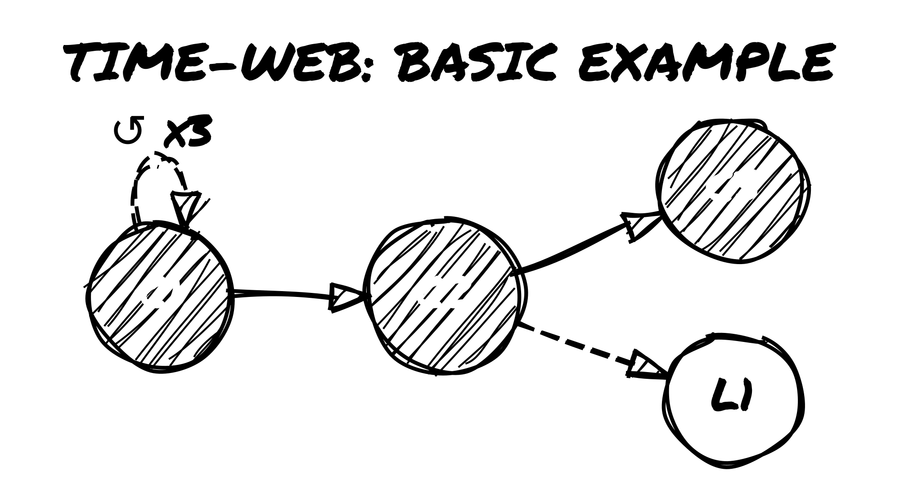
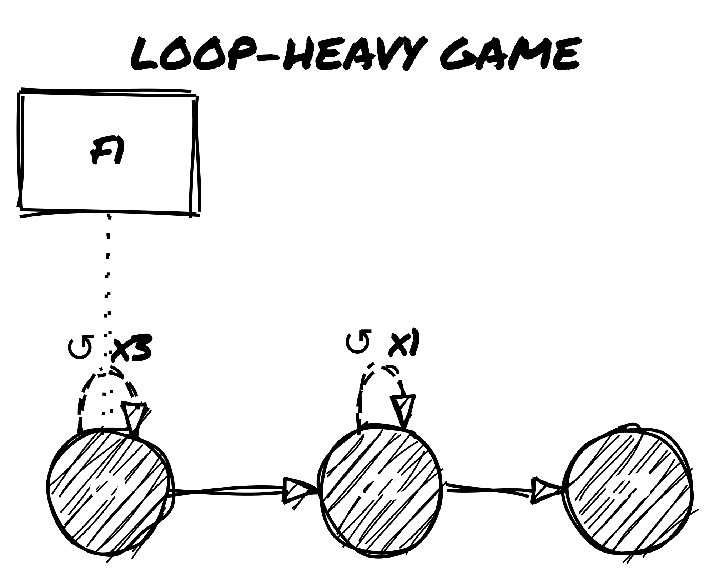
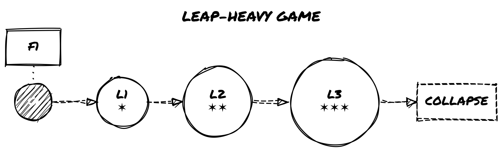
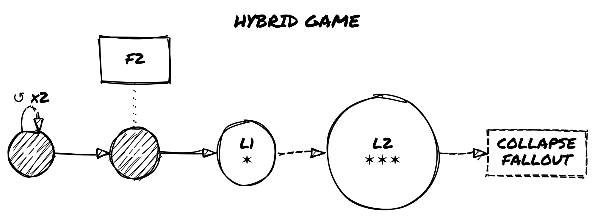
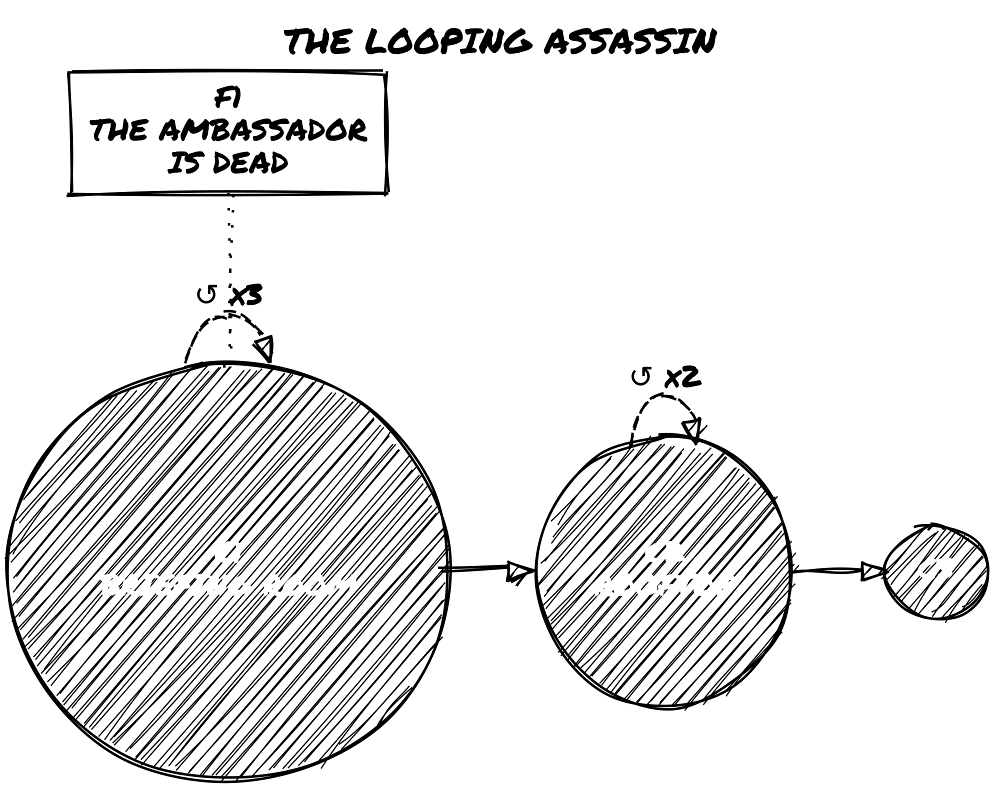
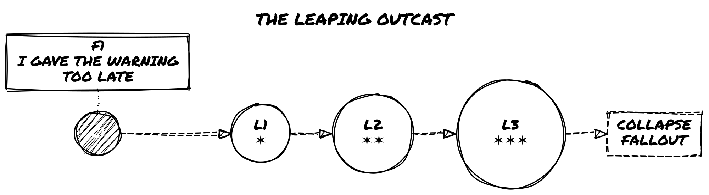
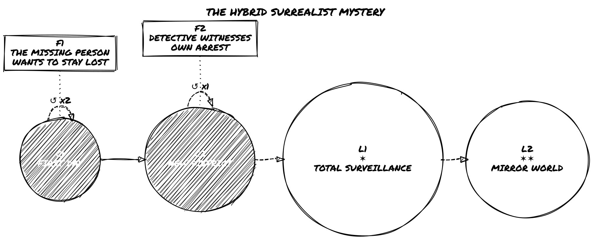

Two modes of temporal play for solo storytelling: looping fates and irrevocable leaps.
Author
Roberto Bisceglie
Published
July 20, 2026
Loner: The Path Not Taken
Two modes of temporal play for solo storytelling: looping fates and irrevocable leaps.
Introduction
The Path Not Taken is a supplement for Loner. It adds new tools to tell stories about time loops, alternate timelines, and different versions of the same character.
It doesn’t introduce new stats, new dice, or new character sheet fields. You still use the same tag system and oracle rolls from Loner. What it adds are two new procedures, each layered over the mechanics you already know:
Loop Mode lets you repeat the same part of your story, trying to get a better outcome.
Leap Mode lets you jump into a different timeline where things happened differently.
These procedures add structure—counters, node tracking, a timeline diagram—but nothing that requires number-crunching or new resolution mechanics. If you’ve played Loner before, the new pieces will slot in naturally.
These modes are optional. You can add them to any Loner game, at any point.
This supplement is for solo players who want to explore:
What if a key moment had gone differently?
What if your character made another choice?
What if two versions of the same person met?
You’ll track your progress using a Time-Web: a simple diagram where you draw loops, branches, and timeline shifts. It helps you remember what happened when—and which version of events you’re in now.
This is still Loner. There’s no required backstory. You build your character through what they do and what they regret. Now, you can also explore what they remember, what they change, and what they leave behind.
Use it if you want your solo game to explore memory, identity, and consequence—without new numbers, new dice, or new resolution mechanics.
1. Time Isn’t Linear
This supplement adds two new ways to structure solo play. Both build on the core mechanics of Loner rather than replacing them. You still use tags, oracles, and the same resolution process. What changes is how the timeline behaves—and what you track alongside it.
There are two modes:
Time Loop Mode: You replay the same moment or sequence, anchored by a Checkpoint. Each run lets you try new choices while tracking what carries forward and what breaks down. You can retry, reset, and eventually push ahead to new ground.
Time Leap Mode: You jump across timelines, each slightly different. These changes are bounded by Fixed Points—events that must stay the same no matter what. You don’t reset; you shift sideways and deal with what’s already changed.
These modes are optional. You can use just one, both, or switch between them during play.
Each mode is fully defined in the procedures section, with clear steps and tables to support play.
Inspiration
Time Loop Mode draws from stories like Edge of Tomorrow, Palm Springs, and Majora’s Mask. These are focused on repeating a sequence until something changes.
Time Leap Mode is closer to Life is Strange, The Butterfly Effect, Dark, and Steins;Gate. These are about branching timelines and the consequences of irreversible shifts.
Use the mode that fits the story you want to tell—or mix them to explore how memory, identity, and decision-making unfold across time.
2. Preparing for Temporal Play
Before using Loop or Leap mode, take a few minutes to set up the tools you’ll need. This is a one-time setup that applies to your current Loner session or campaign.
Prerequisites
This supplement requires the core Loner rulebook. Several terms used here are defined there; quick references below:
Quiet Scene — A low-stakes scene without an active conflict. Used for recovery, reflection, or gathering information. (Loner core rules, “Keep the Action in Motion.”)
Twist Counter — A tracker that advances on tie results. When it reaches 3, a Twist occurs and it resets. (Loner core rules, “The Twist.”)
Relationship Matrix — A running list of recurring NPCs, each with a role (Ally, Rival, Nemesis, Lost, Ambivalent, Symbolic) and 1–3 tags describing the bond. Update it as roles shift. If you use Loner: Character Builder’s Guide, that book provides a full version; a plain list on a notecard works just as well.
Lifepath tables — Two d66 tables (Origins, What Changed You) used to model alternate-self divergence. Both are included in Appendix D of this book.
2.1 · Shared Setup
Define a Memory Tag Choose one tag that will always stay the same, no matter how time shifts. This could be a belief, a scar, or a truth the character holds onto. Write it down as your Memory Tag.
Identify Sensitive Tags You may also select up to three Sensitive Tags. These are tags that can change across loops or leaps. For example, a relationship, a goal, or a personal belief. If time changes something, it’s likely one of these.
Create the Time-Web Sheet Draw a blank map (on paper or whiteboard). This is your Time-Web—a simple diagram to track how time unfolds.
Start with Node 0, the present moment.
As you play, mark new nodes as:
C# for Checkpoints (used in Loop Mode)
F# for Fixed Points (unchangeable events)
L# for Leap branches (alternate timelines)
Use Standard Notation
Here’s the basic visual language of the Time-Web:
● C1 = Checkpoint (circle)
◯ L1 = Leap branch (open circle)
□ F1 = Fixed Point (square)
→ = forward time (main path)
↺ = loop reset (arrow back to a Checkpoint)
⇢ = leap branch (dashed line)
✶ = Paradox stress marker
Keep the Time-Web visible while you play. It helps you track what changed, what stayed the same, and where you are now.
For full details on how to build and use it, see Chapter 5.
3. Time Loop Mode
You get to try again. But you won’t come back clean.
Time Loop Mode lets you replay a part of your story multiple times, starting from a Checkpoint. You use this when your character is caught in a repeating situation—trying to change the outcome, carry knowledge forward, or survive a doomed sequence. The goal is to carry forward what each attempt teaches you, until you can reach the next phase of the story.
There are no changes to how scenes work in Loner. This mode adds a structure around when and how you reset, what you keep, and what changes.
3.1 · Declaring a Checkpoint
You can declare a Checkpoint (marked as C#) at any time before or during the first dramatic scene.
To set a Checkpoint:
Mark a node on your Time-Web as C1. Circle it.
Define your Persist List. This includes:
Your permanent Memory Tag.
Any gear, information, or facts that your character insists on carrying forward after each reset.
Start a Loop Counter at 0. This number will increase each time you reset to this Checkpoint.
Example: You start your game with a mission to rescue someone. You declare C1 at the entrance to the facility, with your Memory Tag and a map you found earlier in your Persist List.
3.2 · Playing the Loop
Play scenes as you normally would in Loner. The only difference is how the loop affects play when it resets.
When a loop resets:
You return to the last Checkpoint (e.g., C1), and the Loop Counter increases by one. This happens when:
Your character dies
You suffer a major failure
You choose to reset voluntarily
What carries forward:
Anything in your Persist List (tags, items, key info)
The Memory Tag
Any Recalled tags you create during a run
What resets:
All other scene context and tags that aren’t persistent
Relationships and NPC states, unless noted otherwise
Special rules inside the loop:
If you try the same solution to the same problem, roll with Disadvantage unless you introduce a new tactic or tag.
You can mark a tag or note as Recalled to show that your character remembers something important from a past loop.
Use this Oracle prompt often:
“Have I pushed this event further than before?”
3.3 · Pushing Ahead
To move beyond the current loop, you must create a new Checkpoint (e.g., C2) and leave the old one behind.
You can declare a new Checkpoint when one of the following happens:
You reach a completely new location or meet a new NPC
The Loop Counter reaches 3 (i.e., after three resets)
The Twist Counter reaches 3 and you succeed at the current scene’s goal
When you promote to a new Checkpoint:
Draw a new node (C2) on the Time-Web.
Connect it with a solid line from the previous node (e.g., C1).
Write the final loop count on the connecting arrow.
From now on, any future resets send you to the new Checkpoint.
3.4 · Loop Wear & Tear
Each time you reset and the Loop Counter increases, roll 1d6. Apply the result immediately as a temporary tag on your character:
d6
Side-Effect Tag
Effect
1–2
Temporal Migraine
Your next scene after a reset is played at Disadvantage.
3–4
Déjà-Flare
The next tie result on the Oracle counts as a Twist + “Memory Bleed”.
5
Ghost Echo
You glimpse another version of yourself. Add a tag to the Time-Web: “Echo-Self @ node”.
6
Loop Mastery
Choose one piece of learned information. Add it permanently to the Persist List.
Removing Wear & Tear Tags
There are two ways to remove wear-and-tear tags:
Quiet Scene Reset Ritual Spend a Quiet Scene doing something restorative—like sleep, meditation, or repairs. Ask the Oracle:
“Did the ritual take?” If the result is Yes or Yes, and, you may erase one wear tag.
Note: If the Oracle gives you a “Yes, and…” while you are carrying a wear tag, you may spend the bonus to erase that tag instead of taking a narrative benefit.
Push-Ahead to a New Checkpoint When you successfully create a new Checkpoint (e.g., C2), you may:
Erase all Temporal Migraine tags
Erase one additional wear tag of your choice
Repeated resets come at a cost—both narrative and mechanical.
3.5 · Ending the Loop Arc
A Loop Arc concludes when the story reaches a natural resolution—not when the mechanics run out. Checkpoints can keep multiplying, but the loop itself should end when it means something.
There are three possible endings:
Ending
How It Happens
What It Means
Breakthrough
The character achieves the goal that started the loop.
Mark the final Checkpoint as a Fixed Point. Stop resetting. Play continues forward.
Acceptance
The character stops trying to change the outcome and decides to live with what is.
Loop Mode disengages. Play continues from the current state as normal Loner.
Consumed
The Loop Counter reaches 6 without a new Checkpoint being declared. The character is lost in repetition. (Optional.)
The story ends here. The character exists in the loop forever—a kind of tragic fixed point.
Oracle prompt for resolution:
“Is the loop finally broken?”
Yes or Yes, and — The Arc ends on Breakthrough. Mark the final Checkpoint as a Fixed Point.
No or No, but — Not yet. The character pushes on.
No, and — Something fundamental has broken. Move toward Consumed, or trigger a Leap.
You don’t have to reach one of these endings deliberately. Often, the Arc ends because the story simply arrives there. If you’re unsure whether you’re done looping, ask the Oracle.
4. Time Leap Mode
You made the choice. Now leap through what it cost you.
Time Leap Mode lets you jump sideways into alternate versions of your timeline. Unlike Loop Mode, you don’t retry events. You jump into timelines where things already happened differently—sometimes slightly, sometimes drastically.
Your actions in one timeline still matter, but you can no longer undo them. You can only explore what changed, what stayed the same, and how those differences shape the world and your character.
This mode introduces Fixed Points, Leap Nodes, and a system for Paradox Stress that may create new threats.
4.1 · Declaring Fixed Points
A Fixed Point is an event the timeline will not allow you to change. Once it’s set, it becomes a permanent anchor across all future timelines. You can still jump forward or sideways, but this event stays locked.
You mark a Fixed Point on the Time-Web as a boxed node labeled F# (e.g., F1, F2, etc.). Write a short description of the event inside or next to the box.
There are three ways to set a Fixed Point:
How the lock happens
What you do
1. Declaration – You (the player) or the fiction clearly states: “This can’t be changed.”
Draw a boxed node on the Time-Web and label it F#.
2. Milestone Completion – A major story goal is fully completed (e.g., “The city is saved,” “The heir is crowned,” “They died for real this time”).
Mark that event as F# right away.
3. Oracle Lock-In – After any Oracle roll, if the result is “Yes, and…”, you may say “Lock it” to make that result permanent.
Draw the Fixed Point node and label it F#. This choice is yours—it’s not automatic.
Once you set a Fixed Point, it cannot be rewritten—not by future scenes, tag changes, or new Oracle rolls. It stays locked across all Leap Nodes.
If your character later tries to undo, prevent, or contradict a Fixed Point, see Paradox Stress rules in section 4.2. The timeline resists.
4.2 · Triggering a Leap
A Leap creates a new timeline. It’s not a reset. It’s a sideways shift into another version of reality.
You can trigger a Leap in three ways:
Right after creating a Fixed Point
When the Twist Counter hits 3
By asking the Oracle:
“Can I leap now?” If the answer is Yes, proceed with the leap.
Steps to perform a Leap:
Draw a new Leap Node (L#) On the Time-Web, draw an open circle to the right of the current node. Connect it with a dashed line.
Copy your character sheet exactly as it is Then add the tag Temporal Drift +1. This represents minor instability across versions of yourself.
Ask the Oracle three Yes/No questions to build divergences:
“Has a key NPC role flipped?”
“Is an old enemy now an ally?”
“Is one Sensitive Tag rewritten?”
For each Yes or No, and, add a new world tag to the Leap Node. These tags represent changes in relationships, setting, or tone.
Example: If the answer to “Is one Sensitive Tag rewritten?” is Yes, you might replace Loyal to the Order with Defected from the Order. If this rewrite also shifts identity, see section 6.2 for how to model that drift.
Apply Paradox Stress if needed If any of your actions during the leap contradict a Fixed Point, you must:
Play with Disadvantage
Mark a ✶ on the node
If a single Leap Node reaches three ✶, a Paradox Entity appears. This acts as a Nemesis Tag: something hostile, intelligent, and tied to the collapse of the timeline.
4.3 · Ending a Leap Arc
A leap arc ends when you commit to a path—or when the timeline breaks.
There are three possible outcomes:
Ending Type
How It Happens
What It Means
Acceptance
You voluntarily stop leaping and declare the current Leap Node to be the new Prime timeline.
All ✶ marks are removed. Play continues as normal Loner in this timeline. No more jumps.
Paradox Resolution
You confront the Paradox Entity and resolve it—either by defeating, bargaining with, or absorbing it.
The Paradox Entity becomes a permanent tag (e.g., Haunted by Paradox). You cannot leap anymore.
Timeline Collapse
You ask the Oracle: “Is this timeline stable?” and the answer is “No, and…”.
Collapse occurs. Roll on the Collapse Fallout Table (see below), then auto-leap to a fresh node with ✶✶.
Oracle prompt near the end of a leap:
“Is this timeline stable?”
Yes or Yes, but – The timeline holds.
No – The timeline holds for now; mark one ✶.
No, and – Collapse. See below.
Collapse Fallout Table (1d6):
d6
Fallout Result
1
Memory Scorch – Permanently erase one non-Memory tag from your character sheet.
2
Echo Overrun – Spawn an uncontrolled Time Ghost. Treat it as a new Rival Tag.
3
World Glitch – Add the global tag Physics Soft. You gain Advantage for weird solutions, but Disadvantage for anything using standard tech or logic.
4
Relationship Flip – Choose one current Ally. They re-enter the story as a Nemesis.
5
Body Lag – Add the Frailty Chrono Fatigue. It lasts until you clear two Quiet Scenes.
6
Second-Order Reprieve – Paradox protects you. Instead of gaining stress, remove one ✶ and heal one wear tag.
If the new Leap Node ever reaches ✶✶✶ again, another collapse occurs. Apply the table again.
Leaping opens up wide narrative space—but also danger. You can explore regrets, undo decisions, and face versions of yourself you barely recognize. But the cost builds up, and timelines don’t always hold. When they break, something comes looking.
4.4 · Combining Loop and Leap
You can use both modes in the same game. The two procedures are compatible; the rules below cover how they interact.
Checkpoints inside Leap Nodes
You can declare a Loop Checkpoint while inside a Leap Node. Label it C#@L# on the Time-Web (e.g., C2@L1 means the second Checkpoint, set within Leap Node 1). When the loop resets, you return to that position within the Leap Node—not to the main timeline.
Wear tags persist across Leaps
Wear tags (Temporal Migraine, Déjà-Flare, Ghost Echo) live on your character, not on the timeline. When you Leap, they come with you. A Leap is not a cure.
Switching from Loop Mode to Leap Mode
You can trigger a Leap from inside an active loop. The most natural triggers are: the Twist Counter hitting 3 during a loop run, or asking the Oracle “Can I leap now?” and getting Yes. When this happens, the current Checkpoint remains on the Time-Web as a fixed anchor—future resets still return to it—but the story now also exists in the new Leap Node.
Switching from Leap Mode to Loop Mode
While inside a Leap Node, you can declare a new Checkpoint on that node (see above). This starts a loop within the alternate timeline. The Leap Node does not change its ✶ count based on loop resets; only actions that contradict Fixed Points add ✶.
For a worked example of a hybrid game, see Case Study 3 in Appendix B.
5. The Time-Web
This is your map of broken timelines and haunted intentions.
The Time-Web is a simple diagram you build as you play. It helps track loops, leaps, fixed points, and the consequences of choices that echo across versions of your story.
You can draw the Time-Web on any blank sheet of paper, whiteboard, or digital canvas. It does not require special symbols—just consistent use of shapes and lines to show the timeline’s structure.
5.1 · How to Use It
The Time-Web uses a few basic elements:
Node Types
Each major point in your timeline is a node. Use the following format:
C# (Checkpoint) – solid circle A reset point in Loop Mode. This is where you return after a loop ends.
F# (Fixed Point) – square / box An event the timeline will not allow you to change.
L# (Leap Node) – open circle A new version of the world created through Time Leap Mode.
Example: If you begin play and declare a checkpoint, your Time-Web starts with: ● C1
As your game continues, you’ll add more nodes as you branch timelines.
Line Types
Connect the nodes with directional lines to show how time moves:
→ Solid Line – Forward motion in the main timeline. Used between Checkpoints, Fixed Points, and story milestones.
↺ Loop Arrow – A backward-curving line pointing from a loop reset back to the most recent Checkpoint. Label it with the number of loops.
⇢ Dashed Line – A lateral line connecting a Leap Node to the timeline it branched from.
Example:

Basic Time-Web example
Other Markings
Tag Bubbles – You can attach floating tags to any node to mark world state, setting tone, or major changes.
✶ Stress Marks – Track Paradox Stress on Leap Nodes. Each ✶ indicates a growing risk of timeline collapse. Three ✶ on a single node means a Paradox Entity appears.
NPC Drift Notes – If a known character changes between Leap Nodes (ally becomes enemy, roles swap, etc.), you can indicate the shift directly on the node or with a nearby tag.
Keep the Time-Web visible throughout play. It serves both as a timeline tracker and as a reminder of which events and outcomes are still in effect.
5.2 · Oracle Table Additions
When using the Time-Web, you can ask new Oracle questions related to time manipulation and structure. These help you decide when and how to trigger temporal events.
Add these prompts to your Oracle table:
Oracle Prompt
Use This When…
“Have I done this before?”
To detect if you’re in a repeated or altered version of an event
“Can I push the checkpoint?”
To check if you’re allowed to move the reset point forward
“Is this moment now fixed?”
To test whether an outcome should become a Fixed Point
“Does this world recognize me?”
At the start of a Leap scene, to test how NPCs react to this version of you
“Has the Paradox caught up?”
When ✶✶✶ are marked on a node or strange effects escalate
Note: Use the Oracle as normal: Yes / Yes, and / Yes, but / No / No, but / No, and. Some prompts (like “Is this timeline stable?” from section 4.3) have specific mechanical consequences.
5.3 · Visual Examples
Below are three example Time-Web sketches from different styles of play. These are not exhaustive, but show how flexible the system is.
Example 1: Loop-Heavy Game

Loop-Heavy Game Time-Web
C1 looped 3 times before pushing to C2
Fixed Point F1 declared early (e.g., “The reactor explodes”)
Later loop from C2 before pushing to C3
Example 2: Leap-Heavy Game

Leap-Heavy Game Time-Web
Started from C1, leaped three times
Each Leap Node accumulates ✶ as Fixed Point is resisted
L3 collapses due to ✶✶✶; new node follows automatically
Example 3: Hybrid Game

Hybrid Game Time-Web
Early loops at C1, then pushed to C2
From C2, two leaps occur
L2 collapses and rolls on the Fallout Table
You don’t need to draw it perfectly. Every mark is a record of something that actually happened in play.
6. Altered Tags and Shifting Selves
You don’t change. You multiply.
Time travel doesn’t just affect events—it affects you. As loops and leaps stack up, your character becomes harder to define. They carry scars from timelines that technically never happened. They might meet versions of themselves who made different choices. They might not be the original anymore.
6.1 · Temporal Tags
These are tags that reflect your character’s exposure to loops, leaps, or unstable timelines. You can apply them manually when they make sense, or use them as results of Oracle rolls or Fallout Tables.
Common temporal tags:
Loop-Stained – You’ve reset enough times that traces are starting to show: nervous tics, predictive instincts, or a mechanical weariness.
Paradox Host – You’ve become a vessel for contradiction. Something about you shouldn’t exist.
Alternate Self – You know you’re not the same person who started this story.
Knows Too Much – You remember scenes that never happened. You’re slipping ahead or behind the narrative.
Anachronic Scar – A physical or emotional mark from a timeline that no longer exists.
Diverged – A core part of you split off, and may now exist separately.
You can cross out old tags instead of erasing them. Let them echo back later:
As quirks of NPCs (maybe someone else picked up that trait).
As scene prompts (a forgotten event returns).
As modifiers to Oracle rolls (you know this moment already—ask if it helps or hurts).
Example: You once had the tag Loyal to the Order, but in a Leap timeline, you defected. You cross it out. Later, you meet someone who still sees you as loyal—and treats you like a traitor.
6.2 · Identity Drift & Fragmentation
As timelines shift, your identity can fragment. You’re still “you”—but maybe a different “you” each time.
Use this procedure when a Leap meaningfully rewrites who the character was: a Sensitive Tag is rewritten, a Collapse Fallout result alters the self, or a Ghost Echo or Echo-Self emerges. Not on every leap. In Loop Mode, only after strong wear accumulation or a loop arc resolves.
Procedure:
Keep the anchor. Your Memory Tag never changes unless a rule explicitly permits it. It is the fixed point of selfhood across all timelines.
Roll divergence. Roll once on the Origins table and once on the What Changed You table (see Appendix D). These are fragments, not facts. Reinterpret them freely.
Translate into play. Choose one result and apply it as: a rewritten Sensitive Tag, a new temporary tag on your character sheet, or an Echo-Self note on the Time-Web. Do not apply both results unless the fiction strongly demands it.
Keep it light. One or two clear differences are enough. Do not rewrite the whole character sheet. Tags become real only when the fiction hardens them into identity.
Mark any major changes with an Echo-Self note on the Time-Web:
Echo-Self @ [node]
This records that a different version of yourself exists at that point. They may reappear as an NPC later.
During play, ask yourself:
“What part of me doesn’t belong here anymore?”
“Who is showing up that shouldn’t know me?”
“Is this me, or just a familiar shape?”
6.3 · Echoes, Doppelgängers, and Time Ghosts
Sometimes, other versions of you start to appear in the story.
A Time Ghost is a character—fully or partially derived from your own—that intrudes into the current timeline. They can be past or future selves, alternate versions, or even unstable copies.
How they show up:
Reflections, mirrors, or dreams
Walking into the scene uninvited
Calling out across time
Appearing as allies, enemies, or informants
How to track them:
Treat Time Ghosts like NPCs. Add them to your Relationship Matrix with a special role label, such as:
Self-Fragment
Echo
Paradox
Loop-Remnant
Then assign them 1–3 timeline-related emotional tags, like:
Remembers your death
Thinks you’re the copy
Wants to fix what you broke
Knows how it ends
Won’t let you forget
Triggering a Time Ghost:
You can roll a Twist during play and decide it represents a reappearance of an Echo-Self or Time Ghost.
Alternatively, you can let a Leap Node reaching ✶✶ summon a Time Ghost as a precursor to full Paradox.
They share your face and history. Use them to put pressure on unresolved choices and surface the contradictions your character is carrying.
6.4 · Paradox Entities
When you push a timeline too far, it pushes back.
If any Leap Node accumulates three ✶ Paradox Stress marks, a Paradox Entity appears.
This is a major threat—personal, mysterious, and dangerous.
How to use it:
Add a new Nemesis Tag called Paradox Entity or give it a symbolic name (e.g., The Walking Contradiction, The Version That Stayed).
Its form can shift: it might look like a warped version of your character, an abstract force, or someone you failed to save.
Oracle Prompts:
Use these questions to determine its presence or influence:
“Has it found me?”
“Did I just become it?”
“What did I do to deserve this version of it?”
The Paradox Entity doesn’t just chase or attack. It forces your character to face unresolved contradictions—about what they’ve changed, what they’ve become, and what shouldn’t be.
You don’t have to defeat it. You might merge with it, negotiate with it, or accept it.
But once it appears, leaping again is no longer safe. See section 4.3 for how to end the Leap Arc—whether through confrontation, collapse, or acceptance.
7. NPCs Across Timelines
As you loop, leap, and rewrite the timeline, the people you meet change roles, shift behavior, or show up as different versions of themselves.
7.1 · Temporal Relationship Mapping
The Relationship Matrix is a tool used in Loner to track recurring NPCs, their roles, and your character’s emotional link to them. In temporal play, it takes on an extra dimension: memory, continuity, and identity across timelines.
When to create a new entry:
A completely different version of a character appears in a Leap timeline.
A Time Ghost or Echo-Self of a known NPC enters the scene.
An NPC previously dead or missing reappears in altered form.
When to update an existing entry:
You encounter the same NPC, but their role, attitude, or memory has shifted slightly.
The same version of the NPC is aware that the timeline has changed.
Use tags to show how their role or perception evolves:
Remembers past loops
No longer trusts you
Alternate reality version
Knows something they shouldn’t
You can also mark whether an NPC is loop-aware or leap-unaware, depending on how much they perceive the changes.
Example: If a character named Zara was an ally in C1 but shows signs of remembering different outcomes in L2, add the tag Deja-Linked or Partial Recall.
7.2 · NPC Role Drift
NPCs don’t stay in fixed roles across timelines. Their behavior and allegiances may shift based on choices you haven’t made—or events you haven’t reached.
Some common role transformations:
Ally → Traitor – They’ve turned on you in this version, or believe you betrayed them first.
Mentor → Obstacle – They no longer see you as worth helping—or they are trying to stop you from repeating a mistake.
Lost → Found (but changed) – Someone long gone appears again, altered by a different path.
To explore role shifts, ask the Oracle:
“Does this person still hold the same role?”
If the answer is No or No, and, you may need to:
Create a new Relationship Matrix entry (if they’re dramatically different).
Apply a tag like Flipped Loyalty, Remembers a different you, or Shadow of their former self.
Role drift can also be triggered by:
Twist results, especially after dramatic scenes or major losses.
Paradox Fallout, particularly from Leap node ✶ buildup.
Tip: Use shifting NPC roles as emotional contrast. Seeing a trusted ally become a stranger—or an enemy become sympathetic—reinforces the instability of the timeline.
7.3 · Tracking Versions and Reactions
When a character appears in multiple timelines, use clear labeling rather than separate tracking systems. A slight change (one or two altered tags) can be handled by updating the existing Relationship Matrix entry. A dramatic change—different backstory, opposing goals, no memory of you—warrants a new entry.
Label versions using timeline references: Zara (original), Zara @ L3, Tom @ C2 vs. Tom @ L1. On the Time-Web, note which node each version belongs to.
Example: In C2, Tom is a loyal assistant (Reliable, Worried for you). In L1, Tom is a corporate agent (Cold, Reporting to someone else). Two entries. One core identity beneath both.
Keep one or two core tags consistent across versions—even if they’ve turned on you, something recognizable should remain.
Your character might know things they shouldn’t, or treat a stranger like an old friend. NPCs will notice. Use the Oracle to test reactions:
“Do they notice something’s off?”
“Have they seen me like this before?”
“Do they believe what I just said?”
If the answer is Yes, but or No, and, apply tension. Useful tags for this kind of friction: Deja-Linked, Doesn’t Trust the New You, Feels Like We’ve Met, Worried by Inconsistencies, Swears I Already Died.
8. Scene Frames for Temporal Play
The four scene frames below are overlays for temporal distortion—apply them to any Quiet or Dramatic scene when time is bending.
8.1 · Flashbacks Inside Loops
During a Time Loop, your character may start recalling past iterations or trying to send messages back to themselves.
Common uses:
Planting messages: You describe your character hiding notes, recording messages, or arranging objects that a future loop version will find. Later, you frame a new scene around discovering them.
Accessing suppressed memories: You flash back to a moment from an earlier loop, now seen from a different perspective—or suddenly remembered after being forgotten.
How to run them:
Treat flashbacks as normal scenes, but frame them as part of a loop run already in progress.
Clearly state whether the memory is true, distorted, or uncertain.
After the flashback, you may apply tags such as:
Embedded Message
Residual Memory
Loop Fragment
Unstable Clue
These tags can then be used in future Oracle prompts or to justify actions your character shouldn’t technically know how to take yet.
Oracle prompts for flashbacks:
“Did I manage to warn myself?”
“Was the message left too late?”
“Is this memory reliable?”
Use these scenes to make each iteration distinct.
8.2 · Dreamscapes and Hallucinations
Not all timeline bleed shows up as memories. Sometimes it leaks in as imagery, emotion, or metaphor. Use these scenes when:
You’ve accumulated ✶ Paradox Stress.
You’ve just changed timelines via Leap Mode.
A scene ends abruptly or unusually.
Common elements:
Impossible or surreal environments (a flooded city in reverse, a hallway where every door is your bedroom).
People out of place or time (a dead friend walks by, an enemy knows your name).
Shifting sensory experiences (gravity changes, sound loops, color disappears).
How to run them:
Frame the scene without clear context.
You may declare it a Quiet or Dramatic Scene depending on the stakes.
Let your character interact with the environment as normal—but expect odd results.
When the scene ends, decide if it left a mark:
Apply or remove emotional tags (e.g., Unsettled, Hopeful, Fragmented).
Add timeline-specific clues or tag echoes.
Oracle prompts for dream/hallucination scenes:
“Is this a vision from another timeline?”
“Do I wake up changed?”
“Did someone else share this dream?”
These scenes are especially useful for emotional processing and foreshadowing. You can use them to reflect the character’s psychological state—or hint at what’s coming in a future node.
8.3 · Echo-Scenes
An Echo-Scene is when two (or more) versions of the same moment exist simultaneously. These may be:
Your current self and a past version reliving a scene side by side.
You and an alternate self acting in parallel.
A literal echo, where previous actions play out again in distorted form.
Common uses:
To revisit a pivotal moment from a new perspective.
To test whether your character has changed.
To create moral tension between choices.
Techniques for play:
Decide whether your character is observing or participating.
Use different tones or filters to distinguish versions (e.g., hopeful vs. cynical; violent vs. calm).
You can even treat the other version of yourself as an NPC: add them to the Relationship Matrix and tag them (Loop-Remnant, The You That Stayed, Unchanged Echo).
Oracle prompts for echo-scenes:
“Do I remember this version?”
“Is the other me watching or acting?”
“Can I change what happened?”
These scenes don’t need to resolve anything. Use them to confront what repetition has done to you.
8.4 · Fork Scenes
A Fork Scene is a moment where two or more possible outcomes play out—one after the other, or simultaneously. This is most often triggered by an Oracle result or timeline stress event, and represents a branching point in the narrative.
When to trigger a Fork Scene:
The Oracle gives a strong dual result (Yes, and / No, and).
A Twist reveals a deep contradiction or unsolvable tension.
A Leap Node accumulates ✶✶ and reality becomes unstable.
How to frame it:
Describe the same scene happening two different ways.
Play both versions out as full or partial scenes.
You may switch viewpoints, split the narrative, or have the versions interact.
At the end, choose one of the following:
Declare one version “real” and discard the other.
Let the Oracle choose the true path.
Accept both outcomes as true in different timelines (and mark both on the Time-Web).
Tags and outcomes:
One version may grant a new tag (e.g., Hardened by Regret).
The other may erase a tag or relationship.
If both versions lead to the same emotional consequence, you may treat it as a retroactive Fixed Point and mark it as such on the Time-Web.
Oracle prompts for fork scenes:
“Which version is real?”
“Did both of these happen, in different timelines?”
“Is one of these a warning?”
Fork Scenes are moments of rupture. Use them when the story needs a sharp turn, or when the character needs to confront two incompatible versions of themselves.
Use these scene frames when a normal scene isn’t enough to hold everything that’s happening. They show not just what your character does, but how time itself changes the meaning of those actions.
Appendix A – Sample Twist Effects for Time Play
Use this table when a twist in time disrupts the expected path. Roll d66 to select a result, or pick one that fits the scene.
1
2
3
4
5
6
1
A version of you passes by
You glimpse someone dead—alive
You lose time (missing hours)
A previous scene replays nearby
A loop resets—but you’re not ready
An NPC recognizes you wrongly
2
You speak before you think
Time skips ahead mid-scene
You say something you never knew
Your tag changes mid-dialogue
Someone else quotes your past words
A voice speaks from another loop
3
Your reflection doesn’t match
An item disappears from your pack
You remember a life that isn’t yours
A mark appears on your body
You see the same event twice
The Oracle contradicts itself
4
A Time Ghost interrupts the scene
A flash of two timelines merging
Your shadow moves independently
You feel a tag being rewritten
An NPC splits into two roles
A decision was made without you
5
Your memory is challenged
You switch emotional tags suddenly
A past enemy offers help
A Fixed Point flickers briefly
Someone warns you not to leap again
You act without choosing to
6
A paradox starts to form
A character erases as you speak
The environment loops a sound/image
A relationship tag fractures
A duplicate of you appears
Time halts. Everything waits.
Tip: If a twist dramatically alters an NPC, location, or timeline rule, consider updating the Time-Web or adding a ✶ mark.
Appendix B – Prebuilt Time-Web Examples
These three sample Time-Webs show how to map your story when using The Path Not Taken. Each case study includes a timeline sketch, a short play summary, and notes on how tags and paradox stress shaped the story.
Case Study 1: A Looping Assassin
Concept: A solo operative is stuck repeating the same day, trying to prevent a high-profile assassination—until they realize they’re the one who pulled the trigger.
Time-Web Sketch:

The Looping Assassin Time-Web
Details:
C1: First Checkpoint: briefing room. Persist List includes Memory Tag: Knows the Plan.
F1: Declared when the target is killed in a third failed loop. Locked as “The Ambassador is Dead”.
Emotional Arc: The character slowly realizes they are the assassin and must shift the target.
Narrative Outcome: At C3, the character loops one final time and allows themselves to be stopped. The story ends on Acceptance.
Case Study 2: A Leaping Outcast
Concept: A banished oracle tries to find a timeline where they were never exiled—but each Leap reveals more about the betrayal they committed.
Time-Web Sketch:

The Leaping Outcast Time-Web
Details:
F1: Declared after the betrayal is revealed. Locked as “I gave the warning too late.”
L1: The exile didn’t happen, but the character is mistrusted. New tag: Knows What You Shouldn’t.
L2: A close friend has become a public enemy. Role shift from Ally to Traitor.
Paradox Stress: Leaping in denial of F1 causes ✶ buildup; Paradox Entity appears in L3.
Collapse Fallout:Echo Overrun—a past version of the character now stalks them.
Narrative Outcome: The story closes in L4 after confronting the Time Ghost. The character accepts their exile in a stable timeline.
Case Study 3: A Hybrid Surrealist Mystery
Concept: A detective investigates a missing person in a city where time doesn’t behave consistently. Both loops and leaps are used to uncover overlapping realities.
Time-Web Sketch:

The Hybrid Surrealist Mystery Time-Web
Details:
C1: First day of the case. Memory Tag: Saw the Impossible.
F1: Declared after the third loop reveals that the missing person wants to stay lost.
C2: New Checkpoint as investigation shifts to a different part of the city.
F2: Set when the detective witnesses themself being arrested in a parallel reality.
L1: A version of the city where surveillance is total. New tag: You Are Always Watched.
L2: A surreal mirror world. Paradox Entity begins to appear in distorted reflections.
Narrative Outcome: Final scene blends elements from multiple timelines. The mystery is never solved—but the detective understands they were never meant to.
Each of these examples demonstrates a different structural focus:
Case 1 shows mastery of Loop Mode and emotional resolution through repetition.
Case 2 explores identity and consequence using Leap Mode.
Case 3 blends modes into an eerie, fragmented narrative.
You can use these templates as inspiration, scaffolds, or launch points for your own chronologically unstable stories.
Appendix C – Blank Time-Web Sheet
Draw the Time-Web on any blank paper. You don’t need a grid or template — just space to write and connect nodes as the story develops.
How to build it during play:
Start with a single node at the left edge of the page: write Node 0 or C1 and circle it.
Extend to the right as time moves forward, adding nodes connected by solid lines (→).
Branch upward or downward for Leap Nodes, connected by dashed lines (⇢).
Add loop reset arrows (↺) curving back from a reset point to the relevant Checkpoint.
Mark ✶ directly on Leap Nodes as Paradox Stress accumulates.
Leave space around each node for tags, NPC notes, and ✶ marks. The Time-Web grows with the story — don’t plan it ahead of time.
Use this table alongside your diagram to record what each node means and what changed there.
Appendix D – Temporal Lifepaths
These two tables support section 6.2. Use them when a timeline shift produces identity drift: a Sensitive Tag rewritten during a Leap, a Collapse result that changes the self, a Ghost Echo emergence, or any moment when you need to define how this version of the character differs from the previous one.
Each result is a fragment, not a rule. Reinterpret freely. A result that doesn’t fit your setting or tone can be read symbolically or re-rolled. Results become tags only when the fiction makes them matter.
These tables are adapted from Loner: Character Builder’s Guide with permission. The full Lifepath Engine—including Key Relationships, Defining Loss, A Memory That May Be False, and Something You Can’t Let Go—is available there for deeper character and memory work.
Using Temporal Lifepaths
Roll once on each table when the procedure in section 6.2 calls for it. You don’t have to use both results. Choose the one that better answers: how is this version of me different because of time?
Results feed into existing tags, Oracle interpretation, Time-Web notes, and the Relationship Matrix.
Temporal Lifepath Table: Origins (d66)
Where did this version of you begin?
d66
Origin
11
Raised in a forgotten place no map records.
12
Born during a storm that destroyed half your town.
13
Left on a threshold with a mark on your wrist.
14
Grew up underground, with filtered air and no sky.
15
Raised in a traveling group that vanished without explanation.
16
Born into silence—no one spoke until you did.
21
Raised by someone who wasn’t human (or wasn’t anymore).
22
Found inside an abandoned research facility.
23
Born with a different name than the one you now use.
24
Raised among believers in something long disproved.
25
Your hometown disappeared. No one else remembers it existed.
26
The first sound you heard was static.
31
You were an experiment.
32
Grew up knowing you’d never belong.
33
Born to die for someone else’s purpose.
34
You have a sibling no one talks about.
35
Your family was erased from official records.
36
You were born after you died (technically).
41
Found floating, healthy, in a sealed chamber.
42
Grew up near something people weren’t supposed to see.
43
Your birth was part of a ritual. You don’t know which part.
44
No one remembers you as a child.
45
You were raised in simulations. Reality came later.
46
Everyone you grew up with is now missing.
51
You remember two childhoods. You don’t know which is real.
52
The sun didn’t rise the day you were born.
53
You never learned your native language.
54
You had a different body, once.
55
You were always watched. Still are.
56
Raised with others, like you. You’re the only one left.
61
You escaped. From what, you still won’t say.
62
Adopted by those who hated you. You learned to hide.
63
Born under a false identity. You still don’t know the truth.
64
You were never born. You just were.
65
You arrived through a threshold no one else could see.
66
You shouldn’t exist. But here you are.
Temporal Lifepath Table: What Changed You (d66)
What was the turning point for this version of you?
d66
What Changed You
11
You saw something move where nothing should exist.
12
You touched something that responded like it knew you.
13
You killed someone who smiled as they died.
14
You were shown a secret that reshaped your memory.
15
You spoke words not meant for humans—and they understood you.
16
You were left behind in a place that shouldn’t have existed.
21
You survived exposure to something that changed your DNA.
22
You entered a classified site and came out a different person.
23
You read a file that shouldn’t have been accessible.
24
You watched someone you trust be rewritten in front of you.
25
You used a device no one admitted existed.
26
You destroyed something you’d been trained to protect.
31
You crossed into somewhere. It wasn’t another country.
32
You were rescued—but not by any known force.
33
You received a transmission that’s still being decrypted.
34
You failed to contain something. It still follows you.
35
You saw your own death, and then woke up.
36
You were part of a cover-up. The truth got out anyway.
41
You walked away from a mission no one survived. Including you.
42
You heard someone calling your name through a sealed vault door.
43
You met someone who claimed to remember your future.
44
You experienced a full memory of someone else’s life.
45
You were exposed to an object that’s now classified as lost.
46
You encountered an entity that chose to let you live.
51
You watched a creature mimic your body perfectly.
52
You touched a mirror that didn’t reflect you.
53
You experienced a time fracture. Your scars don’t match your story.
54
You heard your own voice giving orders you never issued.
55
You destroyed evidence of something you now regret forgetting.
56
You were supposed to die. Something intervened.
61
You stopped believing the official story. Then you became part of it.
62
You witnessed reality fracture—and no one else reacted.
63
You went under for a procedure. The person who woke up wasn’t fully you.
This work is licensed under the Creative Commons Attribution-ShareAlike 4.0 International License. To view a copy of this license, visit http://creativecommons.org/licenses/by-sa/4.0/ or send a letter to Creative Commons, PO Box 1866, Mountain View, CA 94042, USA.